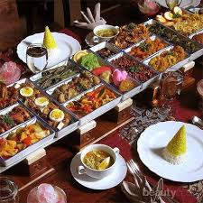
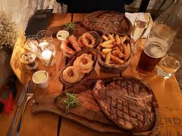

Restoran milik Rava adalah tempat kuliner yang menghadirkan pengalaman makan yang memuaskan dengan suasana yang nyaman dan ramah. Terletak di lokasi yang strategis, restoran ini menawarkan atmosfer yang sempurna untuk bersantai sambil menikmati hidangan berkualitas tinggi. Dengan desain interior yang elegan namun tetap terasa akrab, Restoran Rava menciptakan lingkungan di mana pengunjung bisa merasa seperti di rumah sendiri, namun dengan sentuhan kemewahan.
Restoran ini menyajikan berbagai hidangan lezat yang menggabungkan cita rasa lokal dan internasional, dirancang untuk memuaskan setiap selera, dari yang tradisional hingga yang lebih modern. Setiap hidangan disiapkan dengan bahan-bahan segar yang dipilih secara hati-hati dari pemasok terbaik, memastikan bahwa setiap suapan penuh dengan rasa dan nutrisi. Dari hidangan pembuka hingga hidangan penutup, perhatian terhadap detail dalam setiap proses memasak menjamin bahwa kualitas tidak pernah dikompromikan.
Salah satu daya tarik utama di Restoran Rava adalah menu andalan mereka yang kaya dengan pilihan. Hidangan laut segar seperti lobster, udang, dan ikan bakar disiapkan dengan keahlian khusus untuk mempertahankan kesegaran dan keaslian rasanya. Daging panggang yang juicy juga menjadi favorit, dengan berbagai pilihan saus dan bumbu yang dapat disesuaikan dengan selera pengunjung. Untuk pencinta masakan Italia, restoran ini juga menyajikan aneka pasta dan pizza yang dibuat dengan bahan-bahan asli Italia, serta salad segar yang dipadukan dengan dressing buatan sendiri.
Selain makanan yang luar biasa, Restoran Rava juga dikenal dengan layanan yang luar biasa ramah dan profesional. Tim staf yang berpengalaman selalu siap untuk memberikan rekomendasi menu, menjawab setiap pertanyaan, dan memastikan bahwa setiap kunjungan ke restoran ini adalah pengalaman yang menyenangkan. Tidak hanya melayani makan malam yang formal, restoran ini juga menyediakan layanan katering untuk acara khusus seperti ulang tahun, pesta pernikahan, atau pertemuan bisnis.
Restoran Rava memiliki suasana yang hangat dan modern, dengan pencahayaan yang lembut dan dekorasi yang stylish, cocok untuk berbagai kesempatan. Apakah itu makan siang santai dengan teman-teman, makan malam romantis dengan pasangan, atau pertemuan bisnis yang lebih serius, restoran ini menyediakan tempat yang sesuai untuk setiap situasi. Dengan ruang makan yang luas, pengunjung bisa menikmati privasi sambil tetap merasakan kehangatan suasana restoran.
Dengan semua yang ditawarkan, mulai dari makanan lezat, suasana nyaman, hingga layanan yang luar biasa, Restoran Rava bukan hanya sekadar tempat makan, tetapi juga tempat di mana kenangan indah tercipta. Setiap detail, dari makanan hingga pelayanan, dirancang untuk memastikan bahwa setiap kunjungan ke sini adalah pengalaman bersantap yang tak terlupakan.